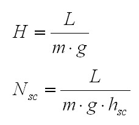

A bit of theory |
Calorie... |
Un po´ di teoria |
|
Problem: How many steps I need to do if I ingest X Calories? Note: A snack are about X=400 kcal or Calories |
Problema: Quanti scalini devo fare se ingerisco X Calorie? Nota Una merendina sono circa X=400 kcal o Calorie. |
|
|
Adopted formulas: 1 kcal = 4180 Joule. 1 kJoule = 1000 Joule. L = Work m = mass g = gravity acceleration H = maximum height hsc = step height Nsc = number of steps  |
Scarica l'applet ed il relativo codice java (±11 KB) Download the applet and the Java code (±11 KB) Un link interessante An interesting link |
Formule adottate: 1 kcal = 4180 Joule. 1 kJoule = 1000 Joule. L = Lavoro m = massa g = accelerazione di gravità H = altezza massima hsc = altezza scalino Nsc = numero di scalini |
|
How to use the web calculator: Choose the properly energy unit (kcal, kJoule, Joule). Digit the energy value. Digit the step height. Digit your body mass. Click on the button <Calcola> |
Come utilizzare la calcolatrice: Scegliere l'unità di misura dell'energia (kcal, kJoule, Joule). Inserire il valore energetico. Inserire l'altezzo dello scalino. Inserire la massa del vostro corpo. Premere il bottone <Calcola> |